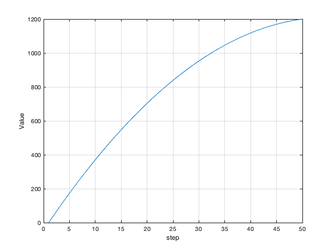

NONUNIFORMSEQUENCE Nonlinear sequence
Contents
Form:
t = NonuniformSequence(tEnd,n,dTFun)
Inputs
tEnd (1,1) End value for t n (1,1) Number of step dTFun (1,1) Pointer to a time step function
Outputs
t (1,n) Sequence
NonuniformSequence>Linear
ans =
Figure (1: Non-uniform distribution) with properties:
Number: 1
Name: 'Non-uniform distribution'
Color: [0.94 0.94 0.94]
Position: [560 528 560 420]
Units: 'pixels'
Use GET to show all properties
 Copyright
Copyright (c) 2019, 2022 Princeton Satellite Systems, Inc. All rights reserved.